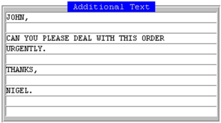

Faxing Purchase Orders in COINSplus
When printing purchase orders (material, subcontractor, overhead and ), when you select to print the order (both in Order Entry, Print Order and Re-Print Order) you have the option to send the order to the Printer or Fax. As long as all overlays and attachments are configured correctly there is no further configuration required.
To fax a purchase order:
- Run the appropriate order print function, and select the order you want to print.
prompts you for the destination:

-
If you select Fax, displays the Fax Details Screen.

The fax details will default in from the purchase order (and Company Information Workbench).
-
To accept all details press F1 .
prompts you to enter any additional text for the cover sheet.

-
To accept the fax details press F1.
prompts you to confirm you wish to send the Fax.
If the Fax is sent successfully will return a four digit Fax Request ID to the bottom left of the screen; if the Fax fails and/or VSI-Fax will return an error.
Configuration
The contact name will appear if set up in the Company Information Workbench.
The fax number will appear if set up in the Company Information Workbench against the relevant office.